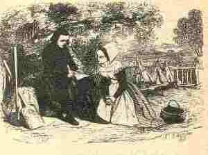

Jenovefa Rustefan
Ton|
1.Pa oa paotr Yannig gant e zenved
|
19.Da gemer an urzhoù na it ket
En abeg d'an amzer dremenet 20.- Distreiñ d'ar gêr me ne c'hallan ket Pe vin anvet ar gaouier touet 21.- N'oc'h eus eta koun eus an holl draoù A zo bet lâret warnomp hon-daou 22.Kollet oc'h eus eta ar walenn 'M eus roet deoc'h e-kreiz an abadenn 23.- Ho kwalenn aour n'am eus ket kollet Doue 'n eus hi diganin tennet 24.- Yannig ar Flecher, distroet en-dro Ha me 'roio deoc'h va holl vadoù 25.Yannig, va mignon, distroet en-dro Ha me 'yelo d'hoc'h heul e peb bro 26.Ha me 'gemero boteier koad Ha me 'yey ganeoc'h da labourat 27.Ma na sentet ket ouzh va goulenn Degasit din-me ar groaz-nouenn 28.- siwazh ! hoc'h heuliañ ne c'hallan ket Rak a-berzh Doue on chadennet 29.Rak gant dorn Doue ez on dalc'het Ha d'an urzhoù eo ret din monet IV 30.Hag o tont en-dro eus a Gemper E teuas adarre d'ar maner 31.- Eurvad, aotrou maner Rustefan, Eurvad deoc'h holl dud, bras ha bihan 32.Eurvad ha joa deoc'h, bihan ha bras Muioc'h evit zo ganin, siwazh ! 33.Me zo deuet d'ho pediñ, d'an deiz Da zonet d'an oferenn nevez 34.- Ya ! d'hoc'h oferenn ni a yelo Kentañ 'brofo er plad, me a vo 35.Me a brofo er plad ugent skoed Hag ho maeronez, va itron, dek ; 36.Hag ho maeronez a brofo dek, Da reiñ enor deoc'h, aotrou beleg |
V
37.Pa oan digouet e-tal Penn-al-Lenn O vonet ivez d'an oferenn 38.E welis kalz a dud o redek Hag i en un estlamm bras-meurbet 39.- Na c'hwi, gwregig kozh, din lavaret, Nag an oferenn zo echuet ? 40.- An oferenn a zo deraouet Hogen he echuiñ n'eus gallet 41.He echuiñ n'en deus ket gallet Gouelañ da Jenovefa 'n eus graet 42.Ha tri levr bras en deus treuzet, 'vat, Gant an daeroù eus e zaoulagad 43.Ken a zeuas ar plac'h o redek Ha gouezas da zaoulin ar beleg 44."En anv Doue, Yann, distroet en-dro, C'hwi zo kiriek, kiriek d'am marv" VI 45.An aotrou Yann Flecher a zo person Person eo bremañ, e bourc'h Nizon 46.Ha me am eus savet ar werzh-mañ M'eus hen gwelet meur 'wech oc'h ouelañ 47.Meur 'wech 'm eus hen gwelet oc'h ouelañ Tostik-tost da vez Jenovefa  |
Variantes tirées du premier carnet de collecte de La Villemarqué

|
P. 137
Renig an Glaz (13) Triwec'h amour kloarek am'eus bet Hag o triwec'h ema beleget! (14) Fulup Olier an diwezhañ Eñ lakae va c'halon da rannañ. (15) Pa oa Olier o vont d'an urzhoù Med eo Janedik war he treuzoù. (16.2) O c'hrouiñ dezhi mouchouerioù Holland (17) Gorreet gant neud aour ha neud arc'hant Da c'holo ar c'halis ema koant. P. 138 (18) - Fulup Olier d'ouzhon sentit! Da resev an urzhoù na it ket! (19.2) 'Balamour d'an amzer dremenet, (21) Ni lako ar gwall deodoù da brezeg. (20) - Distreiñ d'ar ger n'emaon ket kapabl, Pe me vo añvet ur c'haouier toued. (30) Mez pa zistroyen d'ar ger, Me a passey tre ti va mager: (31.1) -Bonjour, mager, ha magerez, (33.1) Me zo deuet d'ho pediñ d'an devezh, (33.2) Da zont disul d'an oferenn nevez. a. Janedik, dreist pep tra, na 'z ay ivez! - Janedik d'an oferenn n'ez ay ket, (19.2) 'Balamour d'an amzer tremenet, b. Ha pa ve drouk an neb a garo, (34.1) D'an oferenn nevez me a yelo. (34.2) Kentañ brofo plad me a vo. (35.1) Ha kant er plad-mañ a brofo, (36) Ha ma zat a brofo hanter-kant, Evit reiñ an inour d'he merc'hik koant . P. 139 (37) Pa oant degouet er parkoù bras c. E glevaz ar c'hleier son ar c'hlaz. - Ha c'hwi, gwregik koz, lavarit din, Petra zo nevez e parez-mañ? - Janedik Mager zo marv Kaerrañ femelen a Rousgou. (39) - Ha c'hwi, gwregig kos, din lavarit, Hag an oferenn a zo echuet? (40) - An oferenn a zo komañset. Med d'he echuiñ eñ n'eo ket kapabl: (41.2) Ouelañ da Jan Mager en-deus graet. |
(42) Tri levr bras en-deus treuzet Gant an daeroù e zaoulagat. d. Adaleg an aoter-vras, beteg an nor-zal, Oa klevet kalon Janedik o strakal! - Fulup Olier, distroit en-dro! Kar c'hwi zo kaos deus va marv. - Mar ouifen e ven kaos ho marv, Ken ne vijen-me kaos deus ho marv, E vijen aet da Rom da zisakrañ; Vijen deuet d'ar ger da ho eurediñ. (2.2) - Mar e-boa ho soñj barzh ar merc'hed, e. N'oa ket poan d'eoch da vont da belek! Ni kousko etc. VARIANTE (6) Vailhantañ merc'hed war ar pavé Oa merc'hed Olier d'an deiz-se (9) Oa ganto bep inkane wenn Ha bridoù alaouret en o fenn . (1) - Pa oan paotr bihan gant deñved, Me ne oa ket soñj da vout beleg. (2) Me ne vin beleg, na manac'h, Lakaat m'eus va spered 'n ur plac'h, (3.1) Ken zeue va mamm da lared din: (4.2) "Deuz er ger vit mont da studiñ (5) Mont da studiñ evit boud belek Ha da lared "kenavo" d'ar merc'hed!" P. 159 Fulup Olier (31.1) - Dibonjour, d'eoc'h-hu, Ha da Janedik mar 'ma dre-mañ. (33) Me zo deuet d'ho pediñ Da zont disul d'an ofern nevez. (20.1)- D'an oferenn nevez me n'ayo ket (21.2) Kaer e vo an dud deus he droukprezek b. - He droukprezek neb a garo, (34.1) D'an oferenn nevez me ayo. (35.1) Ha triwec'h bistolenn me brofo... (18)- Fulup Olier, distroit endro! C'hwi lakay va c'halon da rannañ. (28) - Distreiñ ouzhoc'h me ne rin ket Rag da Zoue am-eus prometet. |
(35) - Ma c'hwi a brofo tregont pistol.
f. C'hwi vezo lakaet e benn an daol. Ha c'hwi vezo eno servijet Hag evel ur plac'hig-an-eured. P. 160 - Ha mar e profit hanter-kant... - Me ... d'eoc'h-hu an habit arc'hant - Me ... ganeoc'h ha habit eured Ar choaz eus va breudeur mar karit. - N'eo ket evit ho preudeur emaon bet O paseal va amser dremenet. Me zisoñj a bije bet well Eus ho c'harantez araok mervel. - (37) E-barzh ar vourc'h paz eo digouet D'eus "komisar vat" (?) he-deus goulennet: (39.1) - An offerenn ne zo komañset ? (40.1) - An oferenn nevez zo komañset (40.2) Mez he achuiñ ne heller ket O c'hortoz Janedik da zegoued. (43) E-barzh an iliz pa antreaz Kichenn an nor-zal e zaoulinaz d. E-tall an aoter vras... Voa klevet... strakal. g. - Mar karec'h Janedig lared din A oa din-me ho-poa prometet. c. - Piv a zo marv er ker-mañ Pa 'ma ar c'hleier 'glas ar son? h. - Ar vravañ plac'hik oa er c'hanton A vo interet war-c'hoas er ger-mañ. Na taolit tamm douar war he bez Nemed pezh a daolo ar c'hure. Rak me ayo ganti benn tri deiz. Ni ayo an daou d'ar baradoz Da ganañ melodi deiz ha noz. Ni eurejo ... Pa n'ezomp ket ... er bed-mañ. P. 220 Variante de Genovefa (d) - Petra zo foll e-touez ar wazed Kemend hag a zo touez ar merc'hed? - Touez ar merc'hed nez-eus foll ebed Nemed kalon Jenovefa rannet. Koulz kalonek eo ar Jenovefa-se! |
Kempennet gant Christian Souchon